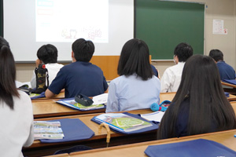

田中 李旺さん
スマートフォンで絵を描くところから始まり、高校でIllustrator、表計算、文書作成、3Dへ学びを広げました。進学後はキャラクター制作、プログラミング、商業ロゴ、ホームページ、3D住宅デザインへ取り組んでいます。
進路と卒業生
授業で身につけた技術、取得した資格、完成させた作品を、大学、短期大学、専門学校での学びへつなげています。
スマートフォンで絵を描くところから始まり、高校でIllustrator、表計算、文書作成、3Dへ学びを広げました。進学後はキャラクター制作、プログラミング、商業ロゴ、ホームページ、3D住宅デザインへ取り組んでいます。
高校では3DCGとPhotoshopに手応えを感じ、理想の住宅や地形を制作。数学の試験で積んだ自信も入試へつなげ、進学後はC言語とゲーム制作を学んでいます。
毎年2個以上を目標に6つの検定へ合格。プログラミングや校内ボランティアも大学入試で伝え、高校で得た基礎が大学の情報分野の講義を理解する助けになっています。
プログラミング、画像処理、表計算を幅広く学びながら、国家試験へ挑戦。生徒会や部活動にも全力で取り組めることを、コースの魅力として挙げています。
田中李旺さんは、スマートフォンで独学していた絵をもっと深く学ぶため情報コースへ進みました。Illustrator、Excel、Word、検定、3D制作へ経験を広げ、卒業後は香川短期大学でキャラクター、プログラミング、商業ロゴ、Webページ制作を学んでいます。
情報コース1・2年生20名がゲームプログラミング体験へ参加しました。
2名の合格者が出て、結果が進学先の特待生決定にもつながりました。

